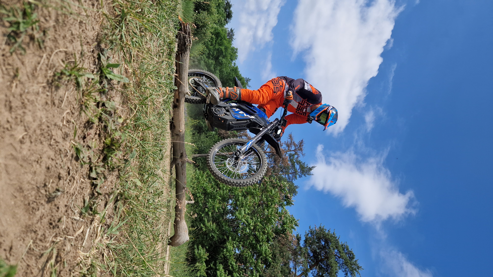

❮
❯
Testing motorbikes and sharing our adventures on YouTube
Gyerekkoromban fertőzött meg a motorozás, majd több év esés-kelés után, egyre több butaságot csinálva rájöttem, valami nagy baj van a toronyban, inkább autózok, abban talán kevesebbet sérülök. Mikor már előre köszöntek a hatvani sürgősségi osztályon, felisertem, hogy mindegy mivel megyek, jobb már nem lesz, akkor már visszaülök motorra is, így esélyt adva a Honvéd kórház dolgozóinak arra, hogy megismerjenek.Innentől a legfontosabb az lett, hogy minden alkalmat megragadjak a fejlődésre, hogy relatíve sok esélyem legyen a túlélésre.Jópár év után jött a lehetőség, hogy felüljek új motorokra, úgy hogy "csak" az az ára, hogy a rusnya pofámat vállalva kamera előtt mondjak pár szót róluk.Szóval, nyeltem egy nagyot, félretettem a szociál média undoromat, és talán valami vállalhatóba sikerült kezdeni. A többit meg döntse el aki akarja...